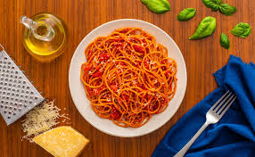

bluberry pie

Description
this recipe is from my great great uncle
who was a professianol bluberrypie maker
he tought me this recipe when i was 6 and i actually burnt myself 3 times
Ingredients
- six blueberry
- pie doughl
- some black eyed peas
- a few raisins
- a quarter cup of salt
- some maple syrup
-
first put the blueberry pie in a pan and
make sure there is no water
-
wait until the crust is black then
eat the rest of the ingredients
-
if you cannot eat the ingredients by the time pie has sublimated
then add the other ones to the pan and then serve the ingredients to your sink
Home